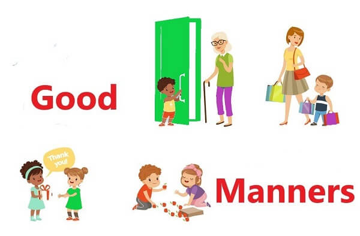

Manners means polite behavior that shows other people respect, courtesy, and kindness.
Manners should be a fundamental step in every child's learning.
It's never too early to start learning manners, Teaching manners to children of early childhood is powerful
for parents and children alike! It helps children navigate their own social world and grow into healthy, happy adolescents and adults.